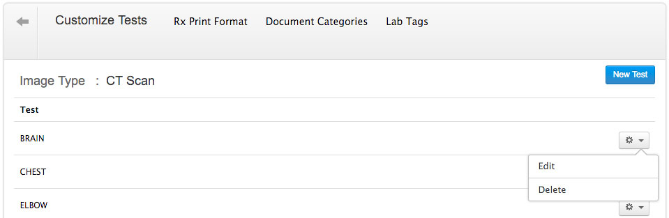

Configuring Labs
Before you start working on your lab module, you need to configure the labs and the tests performed in your lab. Follow the steps given below to configure the lab tests.
- Go to 'Settings' page.
- Click on 'Labs' > 'Customize Tests' option.
- Click on 'New Lab' option to add the new lab. For example, you can add labs like Hematology, Biochemistry, etc.
- Once the lab is added, you can customize the tests that you perform in your in-house lab.
- To add a new test to the lab, click on the gear icon against the lab and choose 'Customize Tests' option.
- Click on 'New Test' button to add the test to the lab. You can configure test codes while adding the tests. Once all the tests are added, click on 'Add' button.
- Further to customize the parameters within the test, click on 'New Parameter' button
- Enter the parameter name, unit, LOINC code and its reference range. The reference range can either be 'Numeric' or 'Custom'. 'Numeric' value takes a range as its input, while 'Custom' value can be a text.
- You can delete the unwanted labs using the 'Delete' option.
Configuring Images
You can customize the imaging tests by following the steps given below:
- From the 'Settings' tab, select 'Lab/Image > Customize Images' option
- You can add a new image type by clicking on the 'New Image Type' button.
- You can add tests to each image category using the 'New Test' option. Using the options in the gear icon, you can edit/delete tests already added to the system.

Configuring Vaccines
To configure the list of vaccines, follow the steps given below:
- Go to 'Settings' tab
- Click on 'Immunization > Vaccines' option.
- Click on 'New Vaccine' button to add a new vaccine to the list
- Add the new vaccine by giving in the details of the vaccine, viz., Vaccine Name, CVX code, dose, immunization schedule, etc.
- If you want to make changes to the vaccine details, you can use the 'Edit' option. If you do not want a particular vaccine you can delete it using the 'Delete' or 'X' button, against each vaccine.
Prepare Vaccine Chart
- Go to 'Settings' tab
- Click on 'Immunization > Vaccine Chart'
- Click on 'New Vaccine Chart' to customize your vaccine chart
- The list of vaccines configured will appear on the left hand side. Click on the '+' icon to add the vaccine. Fill in the details like schedule, dosage, etc. in the popup and click on 'Add'.
- The vaccine will get added to the vaccine chart.